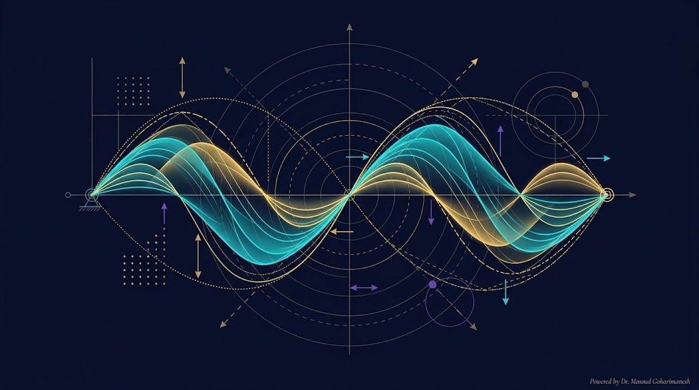
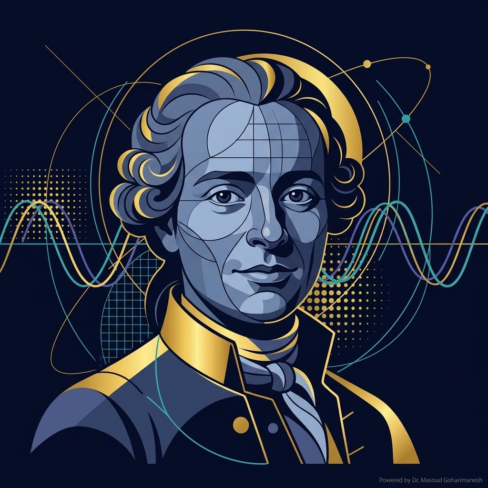
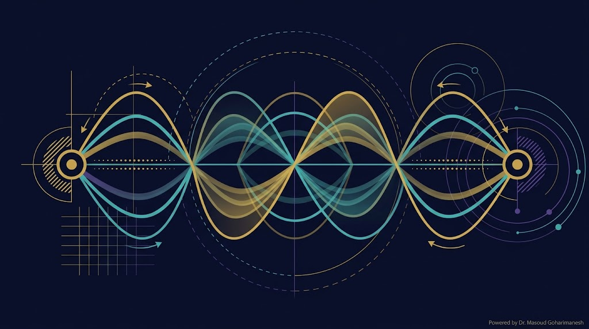
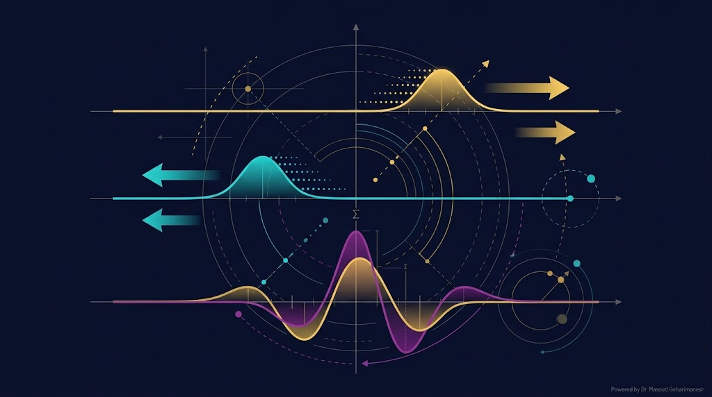
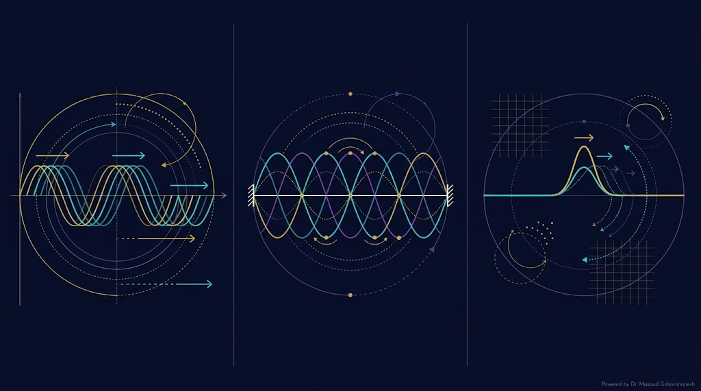
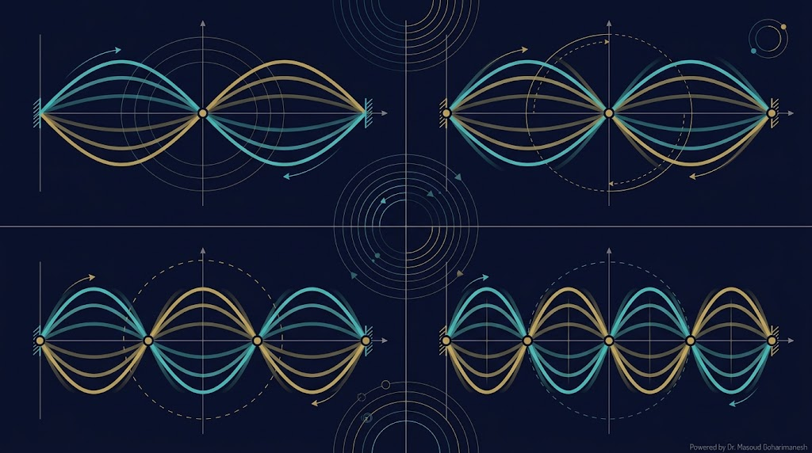
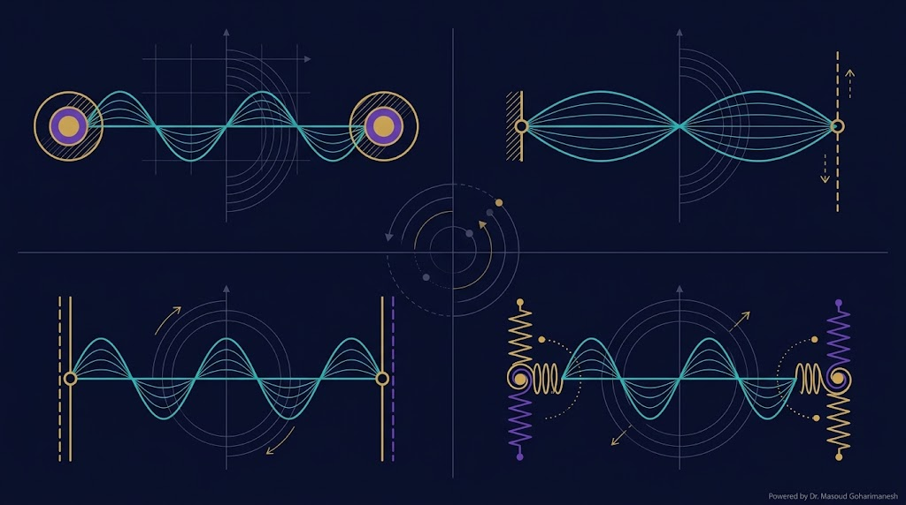
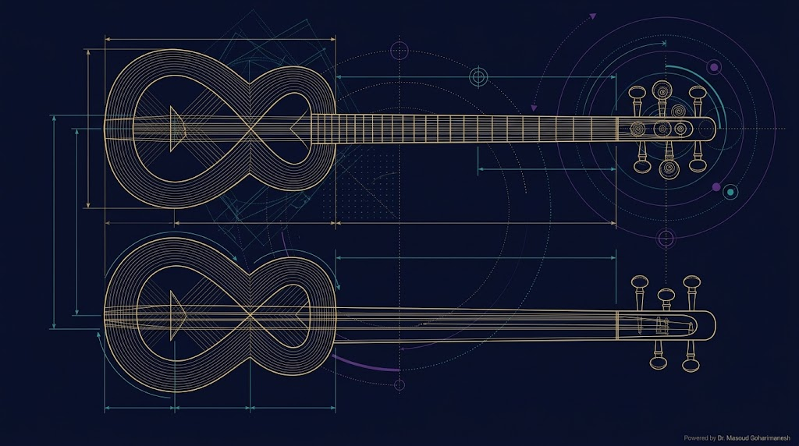
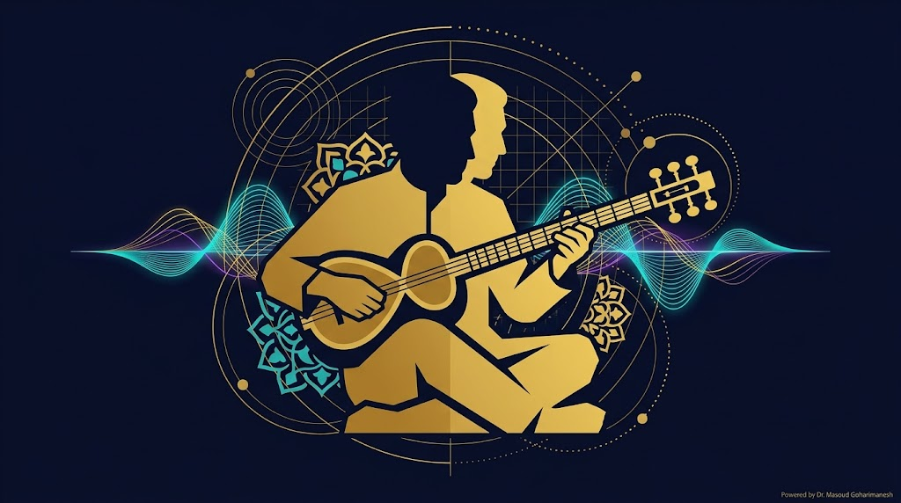
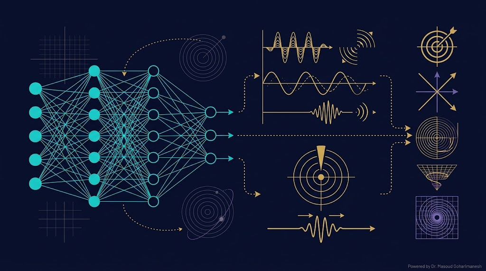

دکتر مسعود گوهری منش
دانشیار گروه مهندسی مکانیک — دانشگاه تربت حیدریه

ریاضیات مهندسی پیشرفته — جلسه ۷
دکتر مسعود گوهری منش
دانشیار گروه مهندسی مکانیک — دانشگاه تربت حیدریه
گرما (سهموی): مشتق مرتبه اول در زمان — انتشار میرا
موج (هذلولوی): مشتق مرتبه دوم در زمان — انتشار بدون میرا

(1717–1783)
ریاضیدان، فیزیکدان و فیلسوف فرانسوی. در سال ۱۷۴۷ اولین حل عمومی معادله موج را ارائه داد و مفهوم «موج رونده» را معرفی کرد.
او همچنین یکی از ویرایشگران اصلی دایرةالمعارف (Encyclopédie) بود — بزرگترین پروژه روشنگری.

در یک قطعه کوچک از تار با طول $\Delta x$، نیروی کشش $T$ در دو سر با زوایای $\theta_1$ و $\theta_2$:
برای جابجاییهای کوچک: $\sin\theta \approx \tan\theta = \frac{\partial u}{\partial x}$
$F = ma$ که $m = \rho \Delta x$ و $a = \frac{\partial^2 u}{\partial t^2}$:
با $c = \sqrt{T/\rho}$ (سرعت موج):

دالامبر با تغییر متغیرهای $\xi = x - ct$ و $\eta = x + ct$، معادله موج را به سادگی حل کرد:
با این تغییر، معادله موج به شکل ساده زیر درمیآید:
با شرایط اولیه $u(x,0) = f(x)$ و $u_t(x,0) = g(x)$:
این فرمول معروف دالامبر است که جواب را مستقیماً از شرایط اولیه میدهد.

موج بهطور پیوسته در یک جهت حرکت میکند. $u(x,t) = F(x - ct)$.
موج با گرهها و شکمها. $u(x,t) = X(x)\cos(\omega t)$.
یک اختلال موضعی که حرکت میکند.
با جایگذاری در $u_{tt} = c^2 u_{xx}$:
دو ODE:
با $X(0) = X(L) = 0$:
حل ODE زمانی:
که $\omega_n = \frac{n\pi c}{L}$ = فرکانس طبیعی مود n.
$A_n$ از شرط اولیه $u(x,0)$ و $B_n$ از $u_t(x,0)$ تعیین میشوند.

هر مود، یک الگوی ارتعاشی با فرکانس مشخص است. فرکانسها، هماهنگهای طبیعی تار را تشکیل میدهند:
۱ شکم، ۲ گره
$f_1$ = پایه
۲ شکم، ۳ گره
$f_2 = 2f_1$
۳ شکم، ۴ گره
$f_3 = 3f_1$

مثال: تار گیتار، ویولن
توابع ویژه: $\sin(n\pi x/L)$
مثال: دیاپازون، تیغههای ارتعاشی
توابع ویژه: $\sin((2n-1)\pi x/(2L))$
مثال: میله معلق در فضا
توابع ویژه: $\cos(n\pi x/L)$
مثال: تار متصل به فنر
با کشیدن نقطهی روی تار، آن را مرتعش کنید و صدایش را بشنوید!
روی کلیدها کلیک کنید تا صدای نُتها را بشنوید و موج آنها را در تار ببینید.

تار، ساز زهی مضرابی ایرانی است که با تغییر طول تار (با حرکت دست روی دسته) فرکانس و نُت تغییر میکند.

سرود «ای ایران» با شعر حسین گلگلاب و آهنگ روحالله خالقی در سال ۱۳۲۳ ساخته شد. این سرود بهعنوان یکی از زیباترین آثار میهنی ایران شناخته میشود.
با کلیک روی دکمه زیر، ملودی «ای ایران» با نُتهای تار پخش میشود و همزمان تار مرتعش را میبینید:
% === حل معادله موج — تحلیلی و عددی === clear; clc; close all; L = 1; c = 1; T_final = 2; Nx = 100; Nt = 500; dx = L/(Nx-1); dt = T_final/Nt; r = c*dt/dx; fprintf('شرط CFL: r = %.4f (باید ≤ 1)\n', r); if r > 1 error('شرط CFL نقض شده!'); end x = linspace(0, L, Nx); u = sin(pi*x/L); % شرط اولیه u_prev = u; % فرض سرعت اولیه صفر % === تکامل زمانی (FDM) === for n = 1:Nt u_new = u; for i = 2:Nx-1 u_new(i) = 2*u(i) - u_prev(i) + r^2*(u(i+1) - 2*u(i) + u(i-1)); end u_prev = u; u = u_new; end % === حل تحلیلی دالامبر === u_exact = sin(pi*x/L) .* cos(pi*c*T_final/L); % === مقایسه === figure('Position', [100 100 1000 500]); subplot(1,2,1); plot(x, u_exact, 'b-', 'linewidth', 2); hold on; plot(x, u, 'ro', 'markersize', 4); xlabel('x'); ylabel('u(x,T)'); legend('تحلیلی', 'عددی'); title('مقایسه حل تحلیلی و عددی'); grid on; % === نمودار 3D === subplot(1,2,2); [X, T] = meshgrid(x, linspace(0, T_final, 50)); U = sin(pi*X/L) .* cos(pi*c*T/L); surf(X, T, U); xlabel('x'); ylabel('t'); zlabel('u'); title('سطح حل معادله موج'); shading interp;
# === حل معادله موج — تحلیلی و عددی === import numpy as np import matplotlib.pyplot as plt L = 1.0; c = 1.0; T_final = 2.0 Nx = 100; Nt = 500 dx = L/(Nx-1); dt = T_final/Nt r = c*dt/dx print(f'شرط CFL: r = {r:.4f} (باید ≤ 1)') x = np.linspace(0, L, Nx) u = np.sin(np.pi*x/L) u_prev = u.copy() # === تکامل زمانی === for n in range(Nt): u_new = u.copy() u_new[1:-1] = 2*u[1:-1] - u_prev[1:-1] + r**2*(u[2:] - 2*u[1:-1] + u[:-2]) u_prev = u u = u_new # === حل تحلیلی === u_exact = np.sin(np.pi*x/L) * np.cos(np.pi*c*T_final/L) # === مقایسه === fig, (ax1, ax2) = plt.subplots(1, 2, figsize=(14, 5)) ax1.plot(x, u_exact, 'b-', linewidth=2, label='تحلیلی') ax1.plot(x, u, 'ro', markersize=4, label='عددی') ax1.set_xlabel('x'); ax1.set_ylabel('u(x,T)') ax1.legend(); ax1.grid(True, alpha=0.3) # === سطح 3D === X, T = np.meshgrid(x, np.linspace(0, T_final, 50)) U = np.sin(np.pi*X/L) * np.cos(np.pi*c*T/L) ax2 = fig.add_subplot(122, projection='3d') ax2.plot_surface(X, T, U, cmap='viridis', alpha=0.8) ax2.set_xlabel('x'); ax2.set_ylabel('t'); ax2.set_zlabel('u') plt.tight_layout() plt.savefig('wave_comparison.png', dpi=600, bbox_inches='tight') plt.show()

$c$ معلوم است، $u(x,t)$ را حل میکنیم — همان کاری که در این جلسه کردیم.
$c$ نامعلوم است، دادههای $u(x,t)$ داریم، میخواهیم $c$ را تخمین بزنیم.
$c$ بهعنوان یک پارامتر قابل آموزش در شبکه لحاظ میشود و بهطور همزمان با وزنها آموزش میبیند.
روشهای تفاضل محدود مرتبه دوم، همگرایی مرتبه ۲ در فضا و زمان دارند (تحت شرط CFL).
| Nx | خطای L∞ | نرخ همگرایی |
|---|---|---|
| ۲۵ | ۴.۲e-۰۲ | — |
| ۵۰ | ۱.۱e-۰۲ | ۱.۹۳ |
| ۱۰۰ | ۲.۷e-۰۳ | ۲.۰۳ |
| ۲۰۰ | ۶.۹e-۰۴ | ۱.۹۷ |
| ۴۰۰ | ۱.۷e-۰۴ | ۲.۰۲ |
نرخ همگرایی حدود ۲ = تأیید مرتبه دوم روش.
ارسال تمرینها:
m.goharimanesh@gmail.com
Subject الزامی:
[Advanced Engineering Mathematics] HW07 - نام و نام خانوادگی - شماره دانشجویی
$u_{tt} = c^2 u_{xx}$
$u = F(x-ct) + G(x+ct)$
مودهای سینوسی
تار، سهتار
نُتهای پخششده
تخمین $c$
جلسه ۸ — معادله لاپلاس و پواسون
برای هر فصل از کتاب فوریه، یک پادکست صوتی با Google NotebookLM آماده کردهام. میتوانید از این لینکها استفاده کنید:
با زیبایی ریاضیات همراه باشید 🌟
دکتر مسعود گوهری منش
دانشیار گروه مهندسی مکانیک — دانشگاه تربت حیدریه
جلسه بعد: معادله لاپلاس و پواسون
🇮🇷 ای ایران، ای مرز پرگهر 🇮🇷